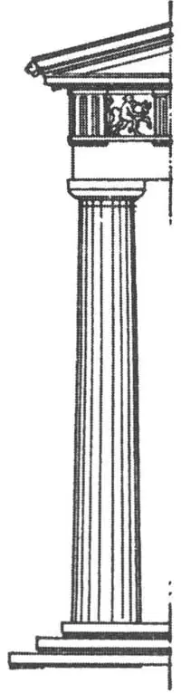

63
THE PERFECT BUILDING
完美的建筑

IF YOU make a mistake in your arithmetic or composition, you can correct it or tear it up and do it over. If a picture or a statue is ugly, it can be put out of sight, hidden, or destroyed. But if a building is ugly, there it stands for every one to see. Its ugliness, its mistakes cannot be covered up until it falls down or is torn down. An architect once committed suicide just as the great temple he had planned was finished. He left a note saying that he had made five mistakes in the building and as they could not be corrected and could not be covered up, there they were for every one to see forever. He could not stand the disgrace.
Most buildings that are erected have many mistakes, many things that are ugly about them, though few people, few passers-by may notice anything wrong.
But there was one building that was erected over two thousand years ago that has no mistakes. It is one of the few perfect buildings in the world. It was built by men, but built for a woman, in honor of a Greek goddess, the Goddess of Wisdom, whose name was Athene Parthenos. And so the building was called after her last name, the Parthenon. It is on a high hill in the city of Athens, in Greece, and though it has been partly destroyed, people go from all over the world to see what a perfect building looks like.
The Egyptian temples had flat roofs because there was little or no rain in Egypt and so a sloping roof to shed the rain was not necessary. The Greek temples had to have slanting roofs, for Greece had rain. So the Parthenon had a sloping roof.
The Egyptians built their temples with the columns on the inside. The Greeks turned the Egyptian temple inside out and put the columns on the outside. The Greek temple was not to hold people, but only the statue of the goddess. People didn’t go inside to worship as they do in our churches. They stood on the outside. The columns the Greeks used were not like those the Egyptians used. They were simpler, but much more beautiful.
Greek temples had three kinds of columns, but the kind used in the Parthenon was the Man’s Style column. It is called Doric after a very old Greek tribe. Not only the column but the style of building that always went with this particular column was strong, simple, plain. That’s why it is called the Man’s Style. There were many Doric buildings in Greece, but the Parthenon was the most beautiful of all.
A Doric building is built on a terraced or stepped platform and is not made of mud bricks plated with alabaster or tile as the Two River people built their temples, but of solid stone, usually marble. There was no cheating in Greek building. It was really what it seemed to he.
Styles in ladies’ hats and clothes change often, as you know, but the Doric style of building has lasted over two thousand years and we are still using it to-day. I’ll try to describe it so you can tell it when you see it.
The Doric column has no base, but rests directly on the platform It tapers slightly as a tree trunk does. Its sides are not perfectly straight. They may look so, but as a matter of fact, they bulge slightly. This bulge is called entasis and a column was given entasis because one that had straight sides, one without entasis, looked as if it were thinner in the middle.
Some architects of the present time, noticing this ever so slight bulge in the Doric column, have thought they would improve on it by making the bulge greater. Some people, when the doctor says take one pill, take two, reasoning that if one pill is good for you, two will be better. But the Greek entasis was just exactly enough and more entasis makes a column look fat and ugly like a man who is fat around the middle.
The sides of the Doric column were then fluted—that is cut with grooves so as to make slender, lengthwise shadows from top to bottom of the column and thus take away from the plainness that a perfectly smooth colunm would have. Most columns nowadays have no fluting. You can imagine how difficult it is to cut such channels in marble without making a single slip. One single slip would ruin the column and it couldn’t be repaired.
The top of the column is called the capital because capital means head. The capital was made of a piece shaped like a saucer, above which was a thin square block. You’ll have to look at the picture to understand the rest.
There is probably some Doric building where you live, for as I have said we are still using this style to-day. It may be a bank or a library, a court-house or some other building. Examine it and see if it has all these things that a perfect Doric building has and only these things.
Are the columns of stone or only of wood?
Are they fluted or only plain?
Has it the proper capital and other parts as in the true Doric style?
Men have tried ever since the time the Parthenon was built to improve on the Doric temple, but it seems impossible to do so. Every change they make from the original is less beautiful.
One of my earliest recollections is a picture of the Parthenon that hung on the wall of my school room. I had seen it day after day for months. One day I asked my teacher what the picture was.
“It’s a picture of the most beautiful building in the world,” she replied.
“What! That old wreck?” I exclaimed. “I don’t see anything beautiful about it.”
“You wouldn’t,” she answered.
That expression “You wouldn’t” rankled. I wanted to argue why it wasn’t beautiful, but she wouldn’t argue.
“Wait until you grow up,” she said.
I hated to be treated as a child who couldn’t understand what was beautiful and what wasn’t, so I set about trying to find out why the Parthenon was not beautiful. But the more arguments I tried to find, the less I found.
And then one day, twenty-five years later, when I first looked upward at that great Doric temple itself, standing against the blue sky, a traveler at my side remarked, “I don’t see anything beautiful about that broken down old ruin.”

No.63-2 DORIC
COLUMN
（陶立克柱式）
And at that, I turned and just kept myself from saying, “You wouldn’t.”
Even a young child can tell whether a person is beautiful or ugly, but even old people can’t tell whether a building is beautiful or ugly, otherwise we shouldn’t have so many ugly buildings. Any one can tell when a person is too tall or too fat, when his ears are too big or his nose too small, whether his proportions, as we call them, are right or wrong, but it takes a good eye to tell when a building’s proportions are right or wrong. Any one can tell that a wart or crossed eyes or a double chin or bow legs are not beautiful.
Now, some buildings have just as ugly things as warts, double chins, or bow legs, but often even old people can’t see them. But the Greeks had what we call “a good eye,” not only for people’s looks, but for a building’s looks.
Some people can’t tell when a picture is hanging straight on the wall. They may even measure the distance and declare it straight, but a person with a “good eye” can detect what the ruler may not show— that it is tipped the smallest bit, just a hair’s breadth perhaps.
There are two important tools that every builder nowadays uses— a plumb bob and a level. A plumb bob tells whether a wall or a column or anything else supposed to be straight up and down is really straight up and down or vertical, as it is called. A level, which has a little bubble in a glass on its edge, tells whether a floor or a sill or anything else supposed to be level is really level or horizontal, as it is called. You can’t fool a plumb bob or a level.
But the Greeks said you couldn’t believe the plumb bob or the level, for columns that are really vertical seem to lean out and floors that are really horizontal seem to sag in the middle. That’s because our eyes make them seem so, but as it is our eyes that have to see buildings, the Greek builders of the Parthenon built it as they wanted the eyes to see it, and so, though all lines may seem to be vertical, horizontal, level, or straight, there is really not a vertical line or a horizontal line or a perfectly straight line in the Parthenon. That’s one of the things that makes the Parthenon so extraordinary!
The columns were not made of single blocks of stone, but of drum-shaped pieces which, however, were cut with such exactitude that they fitted perfectly and no crack showed. It is even said the pieces have grown together like a broken bone that is well set!
【中文阅读】
在做数学题或写作文时，如果犯了错误，可以立马改正，或干脆撕了重写。如果一幅画或一座雕像看着极其碍眼，你可以把它藏起来，或直接毁掉。但如果一座建筑物造得难看，那可是在众目睽睽之下，无法隐藏的。它的缺点遮盖不住，也掩饰不了，除非把它给拆了或等它倒塌了！曾经有一个建筑师在他设计的一座大神庙刚建好 后便自杀了。他临死前留下了一张纸条，说他所主建的神庙犯了五个毛病，因为无法改正，不能弥补，又永远在人们的眼皮底下，使他无法忍受这种耻辱。
大多数造好的建筑物都有许多毛病，不是这里就是那里总有一些不足之处，只不过没有人能看出问题。
但是有座两千多年前的建筑物，却没有任何弊病。它是世界上仅存的完美无瑕的建筑物之一。它是男人们为一个女人，准确地说，是为纪念一位女神建造的——一位名叫雅典娜·帕台农的智慧女神。这座建筑物也是以她的姓——帕台农——命名的。它坐落在希腊雅典的一座高高的山坡上。尽管它已部分受损，但却仍吸引着来自世界各地的游客到此来瞻仰她的完美容颜。
埃及的神庙多为平顶型。由于埃及雨水少，屋顶不需要建成能排雨水的斜坡。而希腊多雨，所以希腊神庙的顶部多为斜坡型。帕台农神庙的庙顶也是呈斜坡状的。
埃及神庙的柱子多藏在里面，希腊却截然相反，所有的柱子都立在外面。希腊的神庙不是用来接纳人，而只用来供奉神像。人们不像我们今天去教堂那样到教堂里面去敬拜，他们站在神庙外完成祭祀事宜。希腊神庙里的柱式与埃及的也不尽相同。希腊神庙的柱式更简约，更美观。
希腊神庙有三种圆柱，但是帕台农神庙的柱式是属于男性风格的柱式。这是以希腊一古老的部族——陶立克——命名的。不单单是柱子，整座建筑的风格都简约、坚固、朴素。这就是为什么把它称作男性风格的原因。希腊有许多“陶立克式”的建筑，但帕台农神庙绝对是最壮丽的。
陶立克式建筑多建于梯状平台上，神庙通体都由坚硬的石头，通常是大理石建成，不像两河流域的人用土坯，涂上石膏或瓷砖为材料来建造神庙。希腊的建筑没有一点偷工减料的现象，都是名副其实的。
你知道，女人的衣帽风格总是造型百变，但陶立克风格的建筑却能持续两千多年之久，且沿用至今。下面我将尽我所能为你描述这种柱式，以便你在见到这种柱式时能立马认出来。
陶立克柱式不打地基，整个柱身虽然不是完全笔直，但却直接由平台支撑，就像树干一样自下往上慢慢变细。它们看似如此，实际上却略微膨胀。这种膨胀叫做“微凸状”。柱子之所以刻上隆起的曲线，是因为笔直的柱身没有隆起的曲线就会看起来两头粗中间细。
一些现代的建筑师注意到陶立克柱式这一微微隆起的特征，于是就考虑使隆起更加突出来增添美观，就像有些病人在医生让服用一粒药的时候偏偏要服用两粒，因为他们认为，如果服用一粒就有效的话，那么服用两粒岂不是见效更快？但是希腊柱子上的纹路实际上是不多也不少的。如果隆起太多的话反而会显得臃肿，就像一个挺着啤酒肚的胖子。
陶立克式柱式的周边刻有多条凹槽，以使柱身看起来纤细、光滑、完美，并且有光影参差错落的感觉，一脱平庸造型。当今大多数柱式都没有这种凹槽造型。可以想象，要在大理石柱上一毫不差地刻下这些槽线在当时是多么困难的一件事。关键是一 点小小的差错就会毁了整根柱子，万劫不复。
柱子的顶端叫做柱头，而柱头就意指顶端。柱头看起来像是一个托盘，上面是一个小小的方状构造。如图所示。
在你的身边或许会有陶立克式建筑，因为如我所述，这种样式沿用至今。它可能是一家银行，一座图书馆，一家法院，或其他别的某个建筑物。你可以仔细观察一下，看看它们是否具有陶立克式建筑所具有这些特征。就如：
这些柱子是石头做的，还只是木头做的？
柱身刻有凹槽吗？或只是普普通通的平面呢？
上有适当的柱头吗？其他部位也都符合真正的陶立克风格吗？
自帕台农神庙建成以来，人们就开始尝试对陶立克式神庙作进一步完善，但这似乎都以失败而告终。每一次的尝试都只能算是画蛇添足。
我早年的记忆之一就是在我的教室的墙上挂了一幅帕台农神庙的画。我一连几个月就这么每天都能看见它。有一天我问老师这幅画画的是什么。
“这幅画画的是世界上最美的建筑物啊。”老师答道。
“什么？就那破房子？”我惊呼，“我可看不出它有什么好看的。”
“你是不会看出来的。”她说。
她的“你是不会看出来的”激怒了我。我想跟她争辩为什么我就看不出来，但她显然没有兴趣。
“等你长大了就会明白。”她说。
我讨厌她把我当成不分美丑的小孩，所以我就要努力寻找帕台农神庙不美的证据。我越是寻找，就越是找不到。
二十五年后的一天，当我第一次抬头仰望这座伟大的陶立克式神庙背靠蓝天的风姿时，听到旁边的一位游客在嘀咕：“我可看不出这堆倒塌的破烂废墟有什么好看的。”我反驳道：“你是不会看出来的。”
一个孩子都能看出一个人漂亮还是丑陋，但一位老者甚至有可能看不出一座建筑物的美丑。也难怪，否则世界上就不会有那么多丑陋的建筑物了。任何一个人都可以看出某某是不是太高，或是太胖；某某的耳朵很大，鼻子却太小；他的身材比例是否协调。但要看出一栋建筑物的比例是否协调，却需要好眼力。任何人都能看出某某的不美之处，或脸上长疮，或长着一双斗鸡眼，或生就一副双下巴，或拖着一双弓形腿。
现在，有些建筑物就像这样的丑人，甚至老者也常常看不出来。但是希腊人却有一副“好眼力”，不仅能辨别人的美丑，更能辨别建筑物的美丑。
有些人看不出来挂在墙上的画是否端正，即便他们用尺量并且很肯定地声称画子已经挂正了。但眼力好的人甚至可以看出尺子也量不出的——细微差别，可能就只有头发丝那么一点差距吧。
今天所有的建筑工人都会使用两种工具——铅锤和水平尺。铅锤能测量墙壁或柱子或其他应该垂直的物体是否与地面垂直，而水平尺的一端有一根玻璃管，里面有个 小气泡，用来测量地板、窗台或其他应该呈水平状的物体是否真的与地面平行。铅锤和水平尺可不会撒谎。
但是希腊人认为不能完全相信水平尺或铅锤，因为真正垂直的柱子看起来却是倾斜的，而真正与地平线平行的地板却在中间看起来是凹下去的。那是因为我们的肉眼产生了误差，正如我们观看建筑物是用肉眼一样，古希腊人在建造帕台农神庙时也是用肉眼来观测的，所以同理，即便某些建筑看起来或水平或垂直，而实际上它们并非如此。帕台农神庙并不存在完全的水平或垂直的直线，正是这使得帕台农神庙成为奇迹之一。
帕台农神庙的柱子不是用简单的石砖砌成，而是由鼓状的石块，精确切割，仔细拼接而成，不露丝毫缝隙。甚至有人说这些石块已连成一体，就像人的骨骼那样完整协调。